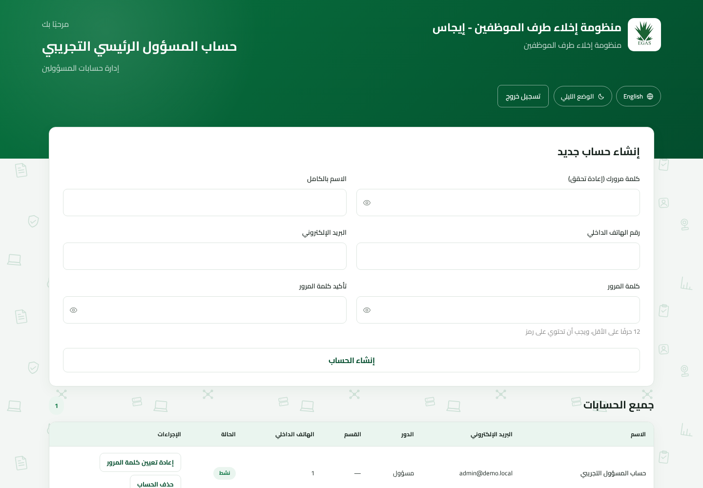

إدارة الحساب الجذري · الإصدار ٢٫٠
دليل المسؤول الرئيسي
الإعداد الأول وإدارة حسابات المسؤولين واستعادة كلمات المرور وحماية حساب المسؤول الرئيسي الوحيد.
الإعداد الأول وإدارة حسابات المسؤولين واستعادة كلمات المرور وحماية حساب المسؤول الرئيسي الوحيد.
ينشئ المسؤول الرئيسي الوحيد حسابات المسؤولين ويصونها. لا يدير الحسابات التشغيلية أو طلبات الإخلاء، ولا يستطيع أي حساب، بما في ذلك حسابه، إعادة تعيينه أو حذفه.
| ١. الإعداد الأول والدخول | التهيئة |
| ٢. إنشاء حسابات المسؤولين | المهمة اليومية |
| ٣. إعادة تعيين أو حذف مسؤول | الصيانة |
| ٤. منع القفل والمرجع | ضابط حرج |
عندما لا تحتوي قاعدة البيانات على أي مستخدم، تحول صفحة الدخول إلى شاشة الإعداد لمرة واحدة. هذا هو المسار الوحيد لإنشاء حساب دون تسجيل دخول.

شاشة الدخول العادية بعد اكتمال الإعداد الأول.
لا يوجد تسجيل ذاتي أو رابط إعادة تعيين بالبريد. في أول دخول للمسؤول، تكون كلمة المرور هي نفسها التي أدخلها المسؤول الرئيسي عند إنشاء الحساب — وهي بالفعل كلمة مروره الحقيقية والدائمة، ولا تفرض المنظومة تغييرها. لا تُفرض كلمة جديدة إلا إذا أصدر المسؤول الرئيسي لاحقًا كلمة مؤقتة عبر إعادة تعيين كلمة المرور (انظر القسم ٣)؛ هذا المسار وحده هو الذي يفرض كلمة دائمة جديدة قبل السماح بأي مسار مصدق آخر.

لوحة المسؤول الرئيسي. تظهر حسابات المسؤولين فقط لأنها حد صلاحية هذا الدور.
| يمكن للمسؤول الرئيسي | لا يمكن للمسؤول الرئيسي |
|---|---|
| إنشاء/عرض/إعادة/حذف المسؤولين | إنشاء مسؤول رئيسي آخر |
| مساعدة المسؤولين في الاستعادة | إنشاء إدارة الوثائق أو المراجعين مباشرة |
| الحفاظ على تغطية المسؤولين | رؤية أو تنفيذ طلبات الإخلاء |
| إدارة المسؤولين فقط | إعادة تعيين نفسه أو حذفه |
لا يستهدف الإجراءان حساب المسؤول الرئيسي الحالي. يفرض الخادم ذلك وليس مجرد إخفاء في الواجهة.
| المشكلة | المعنى | الإجراء |
|---|---|---|
| صفحة الإعداد لا تفتح | يوجد مستخدم واحد على الأقل. | استخدم الدخول العادي ولا تمسح المستخدمين لتجاوز الحارس. |
| الدور التشغيلي غير متاح | المسؤول الرئيسي يدير المسؤولين فقط. | أنشئ/استخدم مسؤولًا للحسابات التشغيلية. |
| المسؤول الرئيسي غير ظاهر بالقائمة | إدارة الذات ممنوعة عمدًا. | اتبع إجراء الاستعادة المعتمد ولا تعدل الإنتاج ارتجالًا. |
| المسؤول يرى شاشة كلمة جديدة | كلمة إعادة التعيين مؤقتة. | يحدد المسؤول كلمة دائمة مطابقة للشروط. |
| طلب الإخلاء غير متاح | لا يملك المسؤول الرئيسي صلاحية البيانات. | استخدم الدور التشغيلي المناسب ولا توسع الصلاحيات. |